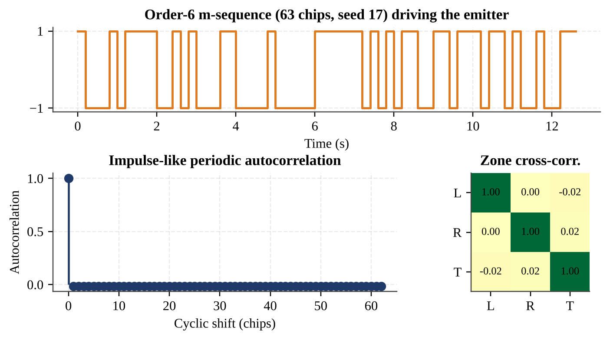
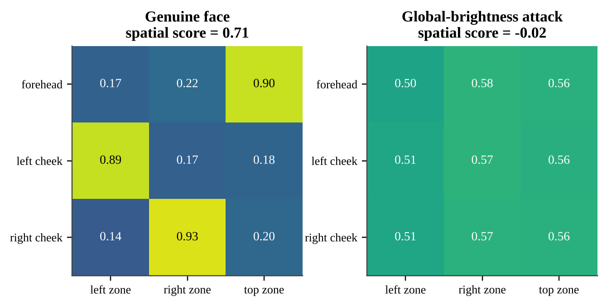
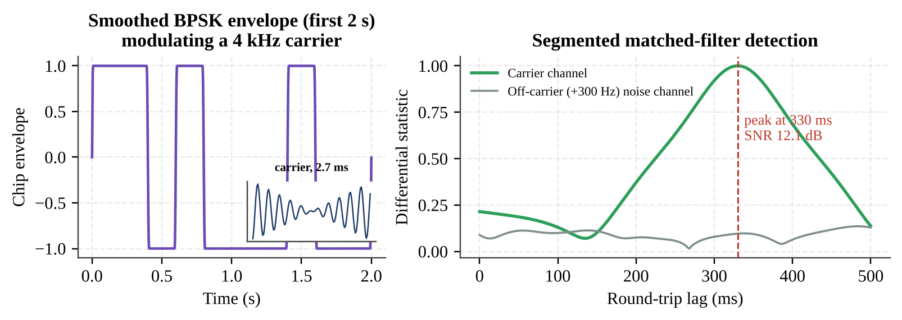
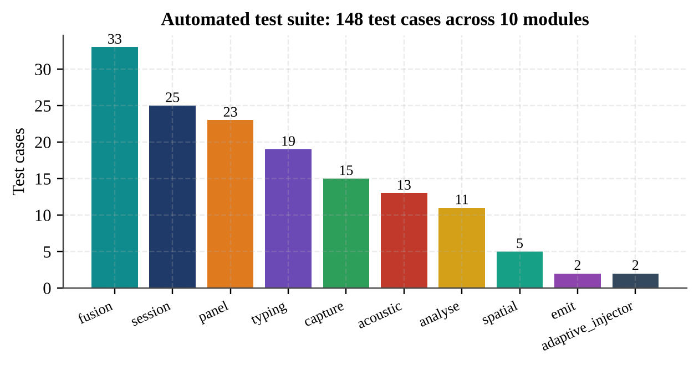

Methodology and Testing
This chapter describes each module of PRAESENS, the mathematics it implements and the design decisions behind it, followed by the testing strategy. The code base comprises twelve core modules in the praesens package (≈ 4,600 lines) plus demonstration, attack, evaluation and diagnostic tooling, for a total of roughly 11,700 lines of Python.
5.1 Module Description
5.1.1 Challenge Synthesiser (challenge.py)
The challenge is a ±1 maximum-length sequence produced by a Fibonacci linear feedback shift register of order n. With a primitive feedback polynomial the register visits all 2n−1 non-zero states before repeating, and the resulting sequence has the two-valued periodic autocorrelation {{c:golomb,macwilliams}}
This impulse-like property means a genuine reflection yields one sharp correlation peak, and periodic interference such as 50 Hz mains flicker cannot accidentally align with the pattern. Rather than trusting a published tap table — whose conventions differ between sources and silently produce short cycles if mismatched — the module searches for a tap set whose simulated period equals 2n−1 under its own shift convention. The smallest order covering the required number of chips is chosen, and the seed (the initial register state) is drawn from the operating system’s cryptographic random source. Because (order, seed, chip rate, duration) fully determine the sequence, a session log needs to store only those four numbers to be independently re-scorable. {{f-mseq}} shows a 63-chip sequence, its autocorrelation and the near-zero mutual correlation of the three spatial zone codes.

Zone codes. For the spatial challenge the three zones receive cyclic shifts of the same full-period sequence, spaced N/3 chips apart. A cross-correlation between shifted copies is the autocorrelation at that shift, so the zones are guaranteed near-orthogonal by Eq. (5.1). Shifting is done on the full period before truncation, since rolling a truncated excerpt would break the property.
Challenge phrase. For the typing lane, five words are recombined from a hand-authored list of about 150 common words, seeded deterministically from the session seed. A generative flag that would call a language model is hard-pinned off and raises an error if enabled, so the demonstration path never depends on a network service.
5.1.2 Emitter (emit.py, spatial.py)
The emitter renders a full-screen window whose border (25 % of each edge in sessions; 14 % in the panel demo) takes luminance
where s(t) is the zero-order-hold chip value. The modulation depth A was raised from 60 to 110 after a real gate run scored a bona fide session 0.692, just short of the original 0.70 bar, while the emitter-off control stayed at 0.000 — the control behaving correctly showed that strengthening the stimulus, not lowering the bar, was the right fix. Every redraw records time.perf_counter() at the moment the frame is actually pushed to the window, so the optical lane aligns against what was truly on screen. The emitter-off condition renders a constant B: since the chips are zero-mean, this has exactly the same average luminance, isolating the pattern as the only changed variable. The SpatialEmitter paints left, right and top zones with independent zone codes and exposes the same drive_and_log() interface, so demonstrations can switch between the two emitters without changing their run loop.
5.1.3 Optical Lane (optical.py, capture.py)
The optical lane is the primary evidence lane. Its processing chain is:
- Capture with honest timestamps. Each frame is timestamped at
grab(), before decoding, so the time reflects when light reached the sensor. A single shared capture helper negotiates pixel format, resolution and frame rate in a DirectShow-safe order. - Exposure and white-balance lock. Auto-exposure would actively cancel the brightness changes being measured. The camera is locked to a manual exposure value, verified by checking luminance stability over 15 frames, and then warmed up for 30 frames before the frame rate is measured.
- Adaptive chip rate. The chip rate is set to fc = clip(fs/10, 0.5, 5) Hz and the session is lengthened to emit at least 60 chips, so the sequence is always sampled ≥ 10 times per chip regardless of what frame rate the room’s lighting permits.
- Facial ROIs. MediaPipe’s FaceLandmarker {{c:facemesh}} locates 478 landmarks; boxes over the forehead and both cheeks — flat, largely shadow-free skin — are shrunk by 6 % of face height to stay clear of eyes, brows, nose and lips. Landmarks are computed every second frame on a 480-pixel-wide copy, but ROI luminance is sampled on every frame.
- Detrending. A centred, time-windowed (1.5 s) moving average is subtracted to remove slow lighting drift: L̃(t) = L(t) − mean|u−t| ≤ 0.75 s L(u).
- Lag-searched normalised correlation. Because frames are not evenly spaced, the emitted log is re-sampled at (ti − τ) for every lag hypothesis rather than shifting sample indices:
The lag grid is 0–300 ms in 5 ms steps; only non-negative lags are physical, since the reflection cannot precede the stimulus.
- SNR gating. A random chip sequence has a sinc2-shaped spectrum with its main lobe from DC to fc, so signal power is measured in the band [0.3 Hz, fc] with a 4th-order Butterworth filter on a 60 Hz uniform resampling, against the residual out-of-band power: SNR = 10 log10(Pin/Pout). Below 3 dB the session is marked insufficient_signal, which routes to RE-CHALLENGE/no-evidence rather than being counted as an attack. If the SNR is low in the first 3 s, the modulation depth is boosted adaptively.
- Confidence. The lane confidence grows with the SNR margin above the floor, clipped to [0.05, 1.0].
A synthetic-signal test early in development returned an impossible negative SNR for a strong, clean signal; it exposed that a band centred on the chip rate captures only a sliver of an m-sequence’s power. The band definition above is the corrected one.
5.1.4 Spatially-Differential Challenge (spatial.py)
A single global code has a known weakness: an attacker who can see the victim’s screen can estimate the one emitted waveform and multiply the brightness of the injected video by it, and the global score would pass. With three zones driven by near-orthogonal codes, a genuine face is lit predominantly by its nearest zone — the forehead by the top strip and each cheek by its side strip — so the ROI × zone peak-correlation matrix R must be diagonal-dominant. The spatial assignment score is
where z(i) is the expected zone of ROI i. A global multiply attack has only one waveform, so every ROI correlates almost equally with every zone and Ssp collapses to zero ({{f-spatial}}). Because the camera and screen face the subject from the same side, no left–right flip is needed between the emitter’s frame and the camera’s frame.

compute_correlation_matrix(): a genuine face is diagonal-dominant (Ssp = 0.71) while a global-brightness attack is uniform (Ssp = −0.02)5.1.5 Typing Lane (typing.py)
The typing lane checks live engagement with a challenge that could not have been pre-recorded. A KeystrokeCapture listener compares each key press with the next expected character of the session phrase and stores only the key-down time, key-up time and a boolean matched_expected; the character itself exists only as a local variable during one comparison. A structural test types the literal word “secret” and asserts that every stored event has exactly those three keys and no string value anywhere. The score is
where Δt̄ is the mean inter-key interval. The penalty catches naive scripted keystroke injection, which types with unnaturally fast, uniform timing. Fewer than three keystrokes gives no_evidence. The lane passes when Styp ≥ 0.70. An earlier design (Milestone 10) also correlated keystroke impulses with MediaPipe hand motion {{c:mphands}} over a ±300 ms window; it remains available standalone, but was removed from the verdict after real sessions showed that a webcam framed on the face cannot see the hands while typing.
5.1.6 Acoustic Lane (acoustic.py)
The acoustic lane BPSK-modulates the same session chip sequence onto a 4 kHz carrier (44.1 kHz sampling, amplitude 0.6) with 20 ms raised-cosine chip transitions, plays it through the speaker and records the microphone on one duplex stream. Detection must survive two real-world effects discovered on hardware: speaker/microphone clock drift and dropped audio buffers, which cancelled a single 20-second coherent correlation to nearly zero. The detector therefore demodulates to complex baseband (10 Hz low-pass), splits the reference into 1 s segments and forms a differential statistic
in which a constant clock-drift phase step between segments cancels in the magnitude, while at a wrong lag the random chip signs make the products cancel. The noise floor is the larger of (a) the same statistic computed at off-carrier frequencies (±300, ±600 Hz) and (b) the statistic for three decoy codes — shifted copies of the session sequence — so that a probe heard at the wrong alignment cannot pass on a sidelobe. The lag search covers 0–500 ms at 1 ms resolution, and a peak on the search edge is rejected. {{f-acoustic}} illustrates the probe and detector output.

Hardware debugging also uncovered a practical failure mode worth reporting: on the test laptop the default output was a pair of Bluetooth earbuds and the speakers were muted, so the microphone heard no tone at all. The lane now supports named input/output devices, warns when the output looks like headphones, and reports “tone not heard” as an actionable reason.
5.1.7 Fusion and Adjudication (fusion.py)
Every lane emits a LaneResult. A lane contributes only when its status is ok and its lag lies within its physical window (optical 0–300 ms, acoustic up to 500 ms). Two policies are implemented:
- Confidence-weighted Adjudicator (used for ablation): joint score = Σ wl Sl / Σ wl over contributing lanes, ACCEPT ≥ 0.60, REJECT < 0.30, RE-CHALLENGE in between, with a 0.05 hysteresis margin for the live display. A safeguard downgrades ACCEPT to REJECT if any contributing lane’s own subscore is below 0.30 — added after a test showed a confident typing lane could numerically out-vote an optical lane that already looked like an attack.
- Binary-gate policy
adjudicate_two_lane()(used for live sessions, {{f-verdict}}): optical must pass on both score and lag; secondary lanes failing yields RE-CHALLENGE; optical failing yields REJECT.
Each verdict carries a sentence such as “all 3 lanes agree: optical 0.75, typing 1.00, acoustic 0.93” or “optical lane failed — scored 0.17, below pass threshold”, and the same helper drives both the terminal block and the on-screen banner, so they can never disagree.
5.1.8 Attack Tooling (demo/attack.py, attacks/adaptive_injector.py)
A defence is only as credible as the attacks it has been tested against, so we built attacks against our own system. The attack harness opens every camera source (real webcam, OBS Virtual Camera) at start-up and switches between them with a pointer swap, so the audience sees the rolling score collapse without a reset. The adaptive injector is the strongest attack we could construct: it screen-captures the emitter’s border regions, estimates the emitted waveform purely from pixel brightness (exactly what a second camera pointed at the monitor would see — it is never given the seed), and multiplies the luminance (Y channel) of a source video by that estimate with a configurable processing lag, outputting through a virtual camera. Global and per-zone modes are supported.
5.1.9 Evaluation Pipeline (eval/)
analyse.py computes the score distribution per condition, ROC/AUC, EER and APCER/BPCER/ACER at the EER threshold {{c:iso30107,fawcett}}, per-attack-type metrics at the pooled threshold, per-condition robustness tables and collapse-latency statistics. Emitter-off sessions are reported as a control and insufficient-signal sessions as measurement failures; neither is folded into the attack class. cross_session.py builds an injection proxy without attack recordings: every genuine trace is scored against every other session’s challenge — physically what an injected video looks like to the verifier, a real face responding to a pattern it never saw. ablate.py recomputes verdicts with each lane held out.
5.2 Testing
5.2.1 Testing Strategy
Testing followed four levels:
- Unit tests on synthetic signals. Deterministic, hardware-free tests for every module (pytest), each tied to a specific claim — for example, that a high subscore at an implausible lag contributes nothing, or that no character is ever stored.
- Mocked-hardware integration tests. Camera, audio and keyboard are mocked to verify orchestration properties, such as exactly one
open_camera()call and both lanes receiving the literal same frame object. - Real-hardware sessions. Every milestone ended with a real run whose JSON log was committed, including deliberate missing-device runs to verify graceful degradation.
- Scientific controls and adversarial testing. Emitter-off controls, virtual-camera injection, the adaptive injector and cross-session mismatching.

The full suite contains 148 test cases ({{f-tests}}). Executed in a headless Linux container while preparing this report, 143 passed; the remaining five require a real audio device (PortAudio) or a GPU/EGL display library that the container does not provide, and pass on the development laptop, where the suite was run at every milestone.
5.2.2 Representative Test Cases
| ID | Test case | Expected result | Outcome |
|---|---|---|---|
| T1 | Zone codes derived from one seed | Diagonal > 0.99, off-diagonal < 0.1 | Pass (1.00 / ≤ 0.02) |
| T2 | Genuine per-zone reflectance (synthetic) | Diagonal > 0.6 and > 0.3 above best off-diagonal | Pass |
| T3 | Global-brightness multiply attack via real injector code path | Global score rises, spatial score stays dead | Pass (global 0.053 → 0.951, spatial −0.020) |
| T4 | Lane with high subscore at implausible lag | Contributes nothing; joint score undefined | Pass |
| T5 | Typing 0.95 vs optical 0.05 (weighted mean 0.80) | REJECT, not ACCEPT | Pass (after fix) |
| T6 | Press literal phrase “secret” | Stored events have only {t_down, t_up, matched_expected} | Pass |
| T7 | Robotic keystrokes (< 30 ms apart) | Score × 0.3 penalty, flagged implausible | Pass |
| T8 | Acoustic probe with 50 ppm drift and a dropped 512-sample buffer | Still detected at correct lag | Pass |
| T9 | Probe beyond lag window / unheard probe with startup zeros | Not scored on a sidelobe; not ok; SNR never infinite | Pass |
| T10 | Concurrent session with mocked hardware | Exactly one camera open; same frame object to the optical lane | Pass |
| T11 | Steady-state FPS measurement | Exposure locked, then exactly 30 warm-up frames, then measure | Pass |
| T12 | Banner when GUI call raises | No exception; REJECT renders red, ACCEPT green | Pass |
| T13 | Per-attack metrics: easy vs hard attack type | APCER 0.0 vs 1.0, not a pooled 0.5 | Pass |
| T14 | Rehearsal script with failing transition | Warning shown, sequence continues, no crash | Pass |
5.2.3 Defects Found Through Testing
Testing on real hardware repeatedly found problems that review alone did not. Recording them is part of the method:
| Symptom | Root cause | Fix |
|---|---|---|
| No face detected at the original exposure | Exposure −6 too dark for the room (mean luminance ≈ 24/255) | Exposure sweep; −3/−4 chosen; adaptive chip rate |
| SNR stuck low at 16 fps | Preflight FPS measured before exposure lock (read 8 fps) | measure_steady_state_fps() with warm-up; chip rate 0.80 → 1.60 Hz, SNR 7.72 dB |
| MJPG forcing did not raise FPS | Ceiling was exposure time (fps ≈ 1/2EV), not USB bandwidth | Null result documented; shared capture helper kept |
| Confident typing out-voted a failing optical lane | Weighted mean allows compensation | Downgrade ACCEPT → REJECT if any contributor < 0.30 |
| Terminal showed “Optical PASS (0.17)” | PASS label ignored subscore threshold | PASS requires contribution AND subscore ≥ threshold |
| Acoustic score ≈ 0.00005 with SNR = ∞ | Clock drift; noise window was start-up zeros; 60 ms lag window; muted speakers | Segmented differential detector; off-carrier and decoy floors; 500 ms window; device selection |
| Typing lane always no evidence | Face-framed webcam cannot see hands | Keystroke-timing-only scoring |